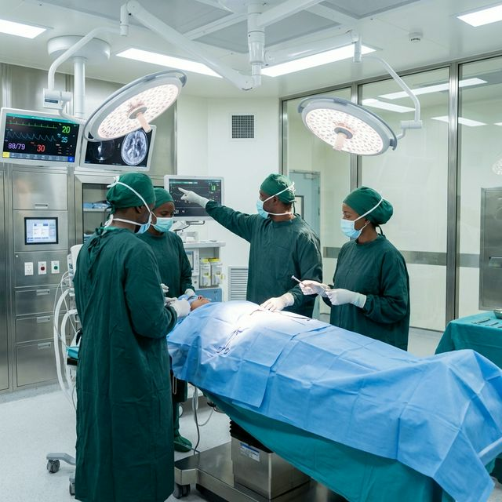
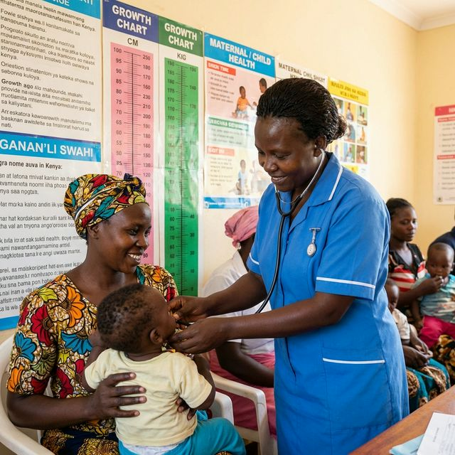
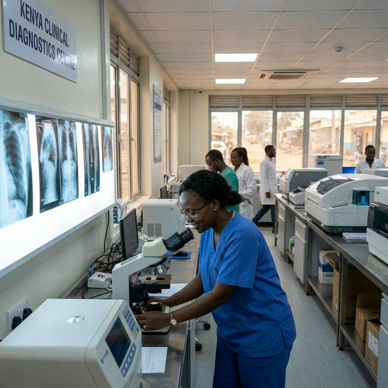
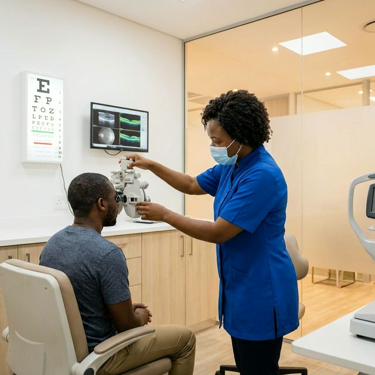
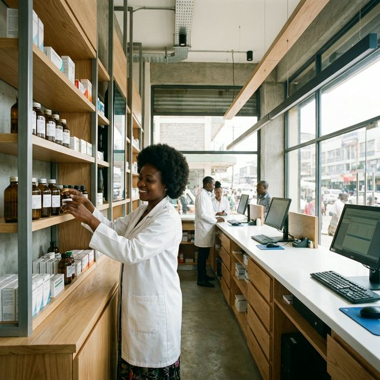

Our Medical Services
From routine checkups to specialized treatments, our team of experts is dedicated to your well-being with precision and compassion across our 8 branches.
ISO 15189:2022 Accredited
Our Kerugoya and Murang'a laboratories are accredited to ISO 15189:2022 international standards, ensuring the highest level of accuracy, reliability, and quality in every diagnostic test we perform.
General Consultations
Our outpatient department is staffed by experienced clinical officers and doctors ready to handle a wide range of common ailments and emergencies efficiently and compassionately.
- General Physician Consultations
- Emergency First Aid & Triage
- Chronic Disease Management (Diabetes, Hypertension)
- Minor Surgical Procedures
- Referral coordination to specialists
Specialist Consultations
Access a wide range of specialist clinics right here at Focus Clinical. Our visiting and resident specialists cover major medical disciplines for comprehensive advanced care.
- Obstetrics & Gynecology
- Physician & General Surgery
- Pediatrics & Neural Surgery
- Orthopedic Surgery
- Physiotherapy & ENT
- Occupational Therapy
- Psychology / Psychiatrics
- Dermatology & Nutritionist


CWC Clinics
Our Child Welfare Clinics provide comprehensive care for mothers and children, ensuring a healthy start to life with dedicated antenatal, postnatal, and child health services.
- Antenatal & Postnatal Care clinics
- Child Immunization (KEPI schedule)
- Growth monitoring & nutrition support
- Pediatric consultations
- Breastfeeding support & counselling
X-Ray Services
Our digital X-ray facilities provide fast, high-quality imaging for accurate diagnosis of fractures, infections, and other medical conditions with minimal radiation exposure.
- Digital X-Ray imaging
- Chest & Abdominal radiography
- Skeletal & Joint imaging
- Quick turnaround results
- Skilled radiography technicians

Ultrasound
Advanced high-definition ultrasound imaging for comprehensive non-invasive diagnosis. Our modern equipment delivers clear 3D/4D images for accurate assessment.
- Obstetric ultrasound (3D/4D)
- Abdominal & Pelvic ultrasound
- Thyroid & Breast ultrasound
- Musculoskeletal ultrasound
- Doppler vascular studies
Echocardiograms
Non-invasive cardiac imaging to evaluate heart structure and function. Our echocardiography service helps diagnose heart conditions and monitor cardiac health.
- 2D & M-mode echocardiography
- Doppler heart assessment
- Cardiac function evaluation
- Pre-surgical cardiac screening
- Follow-up monitoring for heart conditions
ECG (Electrocardiogram)
Quick and painless heart rhythm testing to detect cardiac abnormalities. Our ECG services provide real-time insights into your heart's electrical activity.
- 12-lead resting ECG
- Cardiac rhythm analysis
- Pre-employment & insurance medicals
- Routine cardiac screening
- Immediate results with expert interpretation
Dental Services
Comprehensive dental care from routine checkups to specialized procedures. Our dental unit is equipped with modern equipment for all your oral health needs.
- Dental checkups & cleaning
- Fillings & extractions
- Dental X-rays
- Oral hygiene education
- Emergency dental care

Optical Services
Complete eye care from comprehensive eye exams to prescription eyewear. Our optical unit helps you see the world clearly with expert optometry services.
- Comprehensive eye examinations
- Prescription glasses & contact lenses
- Glaucoma & cataract screening
- Children's eye health checks
- Treatment for common eye conditions
Pharmacy Services
Our well-stocked pharmacy ensures you get genuine, high-quality medication prescribed by our doctors. Our clinical pharmacists offer free advice on medication use.
- Prescription Dispensing
- Over-the-Counter Medications
- Medication Therapy Management
- Clinical pharmacist support & counselling
- Refill Reminders

Laboratory Services
Accurate diagnosis is the key to effective treatment. Our ISO 15189:2022 accredited laboratories in Kerugoya and Murang'a provide precise results with quick turnaround times.
- Full Haematology & Bio-Chemistry Profiles
- Parasitology & Microbiology
- Hormonal Profiles & Molecular Biology
- HIV/AIDS Testing & Counselling
- Urinalysis & Serology
Ready to prioritize your health?
Book an appointment online with any of our specialists today or reach out for inquiries.
Call or WhatsApp: 0717 652 857